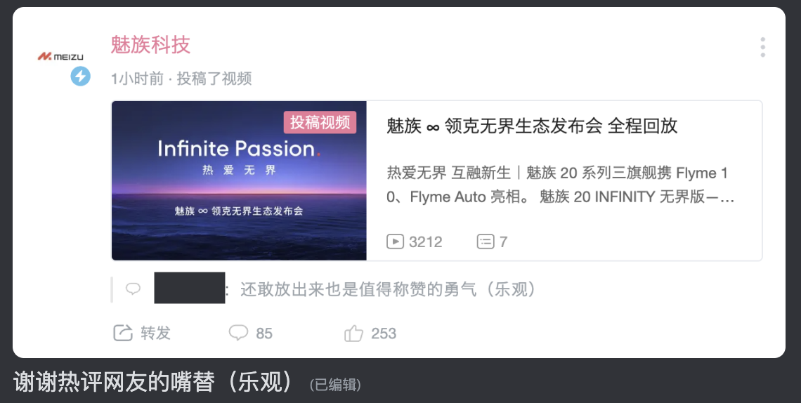

这是一场无实物表演。
或许没有人想在 2023 年的今天，买一台 6.55 英寸 1080P 鸭排辣眼屏幕的魅族 20；也或许没有人能在 2023 年的今天，踏踏实实安安心心抢到一台魅族 20 Pro。毕竟，比小米 13 Ultra 还难抢，「有种你拿货来卖啊」！
啊，领克 08 还没开卖啊，那没事了。
但没事，我还有 Music card，MX4，PRO 6 和 16。
其实到了发布会当天，我已经忙到完全忘记了还有魅族的发布会，突然想起来打开直播间之后，我得到了卡到我头疼的直播画面。
去和朋友聊了聊，他回答我：「去看领克汽车直播间」。
啊，确实，流畅了，Anyway。
| 我熟悉的那一抹「蓝色」消失了

那天的我有些失语。
第一件事是换 Logo 就和新王朝诞生第一件事是换年号一样。
魅族 Logo 高度可读的无衬线字体，Flyme 轻盈的气球意象，还有那抹蓝色，那抹梦想的蓝色是魅族最重要的品牌资产。
那抹蓝色是最重要的。
在魅族抛弃这抹蓝色之后，它的内核就已经变了。

沈子瑜讲车明显比讲手机清晰且富有激情。
我不知道有多少魅友忍着无奈与愤怒看完了那场发布会直播。抱歉我并没忍住，无数次出现的卡顿挑战着我的生理极限，所以我是在之后回顾的重播。但是流畅的视频和我如潮水般涌出的困惑不止该去向何处。整场发布会洋溢着的都是对品牌的傲慢和对产品的无知，甚至不知道自己家（现在应该算是自己家了）的智能家居品牌念 Lipro [‘laɪprəʊ]。
我不想聊 Flyme。
Flyme 确实吸引我。即使完全没有 Flyme 10 只有 Flyme 9，也依旧是我心中最出色的 Android 定制系统，「因为优雅永不过时」。而事实上，似乎如果 Flyme 10 把 Auto 部分扔出去，确实和只有 Flyme 9 没有任何差别。Flyme 10 没有任何显性提升，它所有引人入胜的地方都是曾经的魅族吸引我的地方。
往好里说，它没有「忘本」，知道一个系统最该做好的究竟是什么。
（实名斥责隔壁粗粮家的 MIUI 12）
但 Flyme 10 是历史上最不 Flyme 的一次。
Flyme 10 最大的显性更新，是 iOS 式样的锁屏和 ColorOS 式样的图标。并且，在抛弃了曾经引以为傲的优秀线性震动调教之后，直角边框加持的魅族 20 系列我实在不知道从何下手。
这里需要感谢我的朋友。他是在我身边的所有人中唯一「短暂获得过魅族 20 Pro」的存在。承他蒙恩，我得以短暂抚摸过这台设备。毕竟这年头的魅族专卖店实在是难找了。我曾熟识过一位魅族专卖店主，自我人生中的第一台魅族设备 Music Card 开始，我和他保持了联络。正是由于这些契机，我曾提前见到过多台新机，我也在他的店里担任志愿者，度过了非常难忘的时光。
那位店长先生，现在是位华为伙伴。
而我的朋友获得 20 Pro 的时间之所以短暂，是因为只有他抢到了，然后他某鱼了。
恰如岁月流逝，Flyme 也「恍若易主」。
我不知道未来的它还是否会保有那些纯真和坚持。

别「接近 iOS」了，我要的是更好的 Flyme 。
因为纵使 Flyme 与 iOS 有着相似的追求，但仍然有自己的魂魄。
如果我要的是 iOS 我为什么不去买 iPhone？
因为领克 08 ？这车真的这么吸引我吗？
因为 Flyme Auto？那确实是个大工程。
Flyme Auto 赶工痕迹明显，上车遥遥无期， UI 和 UX 与吉利全家桶（ZEEKR OS 4 和 Lotus Hyper OS）大同小异…… 虽然我曾经试图厘清亿咖通和星纪魅族的关系，但是抱歉我放弃了。尤其是一想到魅族在发布 Flyme Auto 前领克刚刚发布了 LYNK OS N，纵使 LYNK OS N 适配高通的 8155 平台而魅族瞄准的是亿咖通的新平台，但这让我更加担忧魅族的前景。
| 追求源于热爱，而热爱「无界」
在 Logo 和标志色变化之后，我其实已经完全不在意硬件软件到底是什么样了。无论是 iPhone 皮的三星还是带着 iOS 气味的 ColorOS 什么的真的已经完全不在意了。Logo 奇怪的摆放位置以及宣传绘神奇的排版和字体什么的我真的已经完全不在意了，完全不在意了……
只是失望，但是这份失望什么都代表不了。
不知道为什么，我突然动了心去看了一遍 MX4 的发布会。我是真的很喜欢 MX4，也很喜欢 Flyme 4。那是我心中魅族的巅峰，比 Pro 5 还巅峰的那种。那是魅族第一次踏出自己的舒适圈，想创出属于自己的一片天地。但是当我回头时，发现曾经叫「魅族科技」的 B 站账号改名叫「魅蓝手机」最后现在叫「Pandaer 官方」。这或许能给魅族最混沌的时期画下一个「巧妙」的注脚。
我曾在魅族 17 的时候写过的一句话，现在我用到了小米 10 Ultra 的 Babble 里：「追求材质是落后于时代的」。追求那些「非核心」甚至连痒点都不是的「高额体验提升」是会出事情的，Pro 7 就是一个极好的例子。但是我确实欣赏魅族这种「稀奇古怪的精神」。毕竟它带给我们的「创新」，虽然有时候并不好用，但总能让我们眼前一亮。
就像那些「画屏」、「小圆圈」、mBack、mTouch、SmartBar 一样。
楠总说的对，「认知层面的东西，也没所谓对错。最终，还是看你做了什么样的产品。」
而产品是要推敲的，是要取舍的，是要坚持的。
热爱可以「无界」，而产品不行。
「追求源于热爱」的魅族，是我永远的追忆。
「惟精惟一」的魅族，我并不讨厌它的存在。
而现在的魅族，甚至连材质都不追求了。
我不知道它在追求什么。
它或许在追求「接近 iOS」，而这个我并不关心。
可能是沈总喜欢 iPhone 吧，大概。
那沈总那台魅族 20 Pro 的边框抛的咋样啊？
啊，沈总可能在用魅族 20 Infinity 吧。供应链的集大成者，未入网的顶级旗舰。
| 「山回路转不见君」
我似乎一语成谶。
其实就这个角度来说的话，我实在是无法理解为什么魅族 20 要等领克 08 了。
可能只是中年领导的「自我沉迷」，
也可能是魅族自身的「自我沉沦」。
但无论是怎样，很多事情已经失去了意义。
我要在这些支离的碎片中，如何拼凑我记忆中的那个「魅族」呢？
でもそんな悠長な理想論は、ここで捨てなくちゃな。
バイバイ「イエスタデイ」、ごめんね。
但这种悠长啰嗦的理想主义，我不得不在这里舍弃了。
再见了「Yesterday」，我很抱歉。Official 髭男 dism - イエスタデイ (Yesterday)
「人生有梦，各自精彩」。
即使你们依旧存在，我或许也应该从这场梦中「毕业」了。
就这样吧，或许也是最后一次了。
（Comment Update: 2023-04-23）
「如然」这两个字的重量，现在的魅族还没搞清楚。
我当时写魅族 20 Babble 的时候还没看到「展示的」、「可体验的」 Flyme Auto。不过根据我们之前讨论的结论，确实是一个很初级的版本。动效效果差距太大了，发布会的那个一镜到底多流畅啊。我看上海车展的体验视频，基本不让体验者自己触碰测试屏，边上的讲解同志非常「热情」，而且演示顺序是定好的，就很没有意思。
现在的 Flyme Auto 还很初级。要是 Flyme Auto 和发布会展示的一样，那我就写篇文章「让我再做一次梦」。但是 Flyme 9 演示里展示的图标入场动画，Flyme 10 才做好。
对魅族真的是希望有多大失望就有多大。
当时我们讨论的结果就是魅族不可能在发布会前后整出可供体验的 Flyme Auto，天时地利人和都做不到。最后确实也没做出来。如果是 SN8155 结果还未可知，但考虑到是亿咖通的车机芯片，我反倒觉得 Flyme Auto 是被放弃的那个。不然领克没必要发布很像的 LYNK OS，除了把 Smartbar 代表的操作栏列在左边了，看起来基本没啥大区别，然后没有魅族这么美观的 UI 吧，审美「吉利」一点……
这是我觉得发布会上最傲慢的一点。
全是「吉利人心里的魅族的样子」，魅族把魅族演给我们看。
还记得当时李楠在魅蓝 Note 6 发布会上找理由说「为什么和高通签协议一年之后才上机器」，理由就是「魅族适应新平台需要时间」。
从联发科到高通花了小一年还调的稀烂，现在是亿咖通车机这个或许比联发科还稀烂的平台，左抄抄右加加也才搞了半年，根本没时间搞手机系统。Flyme 10 最大的更新，那个类 iOS 的锁屏页面，到现在都没 OTA。我买了魅族 20 Pro 的朋友，在他持有这台手机的一个月里，OTA 了 20 多次。
Flyme 团队根本忙不过来。
同样的条件下，给我半年我觉得我做不出来 Flyme Auto。
我觉得魅族算是很给力了，但是我的评价不会变。我不知道未来的它「还是否会保有那些纯真和坚持」。
看上市之后怎么样吧，Flyme Auto 的最终成果，明年还有小米汽车。
很期待啊！别有开屏广告就行了（笑死）
我不担心魅族的工程师跑去吉利了，我担心吉利的工程师把魅族搞得不伦不类。亿咖通的开发水平应该是比 Flyme 团队高的，Flyme 团队高在理解上。但是这个理解也要有空间发挥。如果 Flyme Auto 死了，Flyme 车机其实也就死了，魂不会传承给其它兄弟系统的。
去 OV 了也没改变 OV，这就是为什么我也不期待吉利。OriginOS 和 ColorOS 该是什么样还是什么样，虽然审美带过去了但是状态差不多。然后逐渐变成新的 Funtouch OS 和老的 ColorOS，依旧是东莞 One UI 和东莞 iOS。所以我不觉得 Flyme Auto 的启发会传达给其它吉利的系统，毕竟吉利现在的内部竞争环境很激烈。Flyme Auto 的终极形态我已经可以在极星 4 上看到了，极星的 UI，继续支持 CarPlay 和 Android Auto，支持 Flyme 手机的内容一碰上车机。
Anyway 所以挺混乱的，「充分竞争」换个词就是「过度内耗」。
而且我也觉得车机没必要重新开发，可以类似 realmeOS 和 ColorOS 的关系一样，换个皮就行了。不过未来倒是可以都基于 Flyme core。
真的会叫 Flyme core 嘛，不叫 Ecarx core？可能就是为了这个才改叫星纪魅族。以后的软件品牌会给星纪魅族了，亿咖通专注于硬件。变成 OPPO 的 AndesBrain 和 MariSilicon 的关系。
吉利还是很值得期待的，至少还在用心做车机。
但是这个梦太容易碎掉了。作为星纪魅族和亿咖通共同领导的沈子瑜给我的感觉很不好，他有些过于自信了。当然这种自信可以为了初次上台进行公众分享而装出来的，他就装成了自己最「擅长」的样子 —— 讨厌的中年男领导。但是这种明晃晃对着魅友的勾引就像我拿着猫棒逗狗一样，没啥用还会对着你叫，徒增反感和困惑，然后我就怕最后车方面对设备方面破罐子破摔。
李楠和余承东其实都不至于招致我的反感。他们俩都是最大化自身的价值，对应给公司最大的收益。但沈子瑜就不是，他就是纯粹的膈应（这是可以说的嘛
主要是通常面向用户侧的负责人都很「亲切」，雷总尤甚。
所以带着股爹味的沈子瑜就很显眼。
魅族之前的负责人从来没有这种感觉，这反差就很明显，比当年魅族 15 的时候杨柘出来还明显。